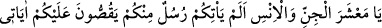
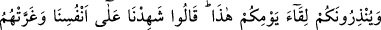
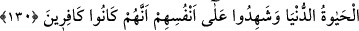

Böylece bu iki sıfatı meydana çıksın:
Lütfunun muştucusu, kahrının korkutucusu
Bil ki, zulüm rabbânî feyzi kabûl eden fitrî-ruhânî istidadı mutlak olarak ifsad eder.
Bu sebeple doğru sözün zalime faydası dokunmaz. Zulmün en çok görüldüğü kişiler,
kudret ve galebe ellerinde olduğu için idârecilerdir.
Bir hadiste şöyle buyurulmuştur:
“İnsanların namazı terk etmeleri, şehvetlerin peşine düşmeleri, devlet reislerinin
hain ve yardımcılarının da fasıklardan olması kıyamet alâmetlerindendir.”
Bu sözü Peygamberimiz’den duyan Selman (r.a.) öne atıldı ve şöyle dedi: “Babam,
anam sana feda olsun bunlar olacak mı?” Efendimiz (s.a.) şöyle buyurdular: “Evet ya
Selman, olacak. O zaman mü’minin kalbi, tuzun suda eridiği gibi eriyecektir. Onu
değiştirmeye güçleri de yetmeyecektir.” Selman yine: “Bu da olacak mı yâ
Rasûlallah?” dedi. Efendimiz: “Evet yâ Selmân, o gün insanların en zayıfı mü’min
olacak. Onların arasında korkarak yürüyecek. Eğer hakikatı söylese onu yerler,
susacak olsa kahrından ölür.”[169]
Sa’dî (k.s.) der ki:
Acem şahlarından haberdar mısın?
Kendi halkına zulüm yaptılar
Ne o görkem, ne de şahlık kaldı
Ne de o halkına ettiği cefalar
Elinden geldikçe incitme halkı
İncitirsen, kendi kökünü kesersin
Allah’ım, bizi zulüm ve fesaddan muhafaza eyle. Kullarını ve beldeleri koruyan
sensin.
130. Ey cin ve insan topluluğu! İçinizden size âyetlerimi anlatan ve bu günle
karşılaşacağınıza dair sizi uyaran peygamberler gelmedi mi! Derler ki: “Kendi
aleyhimize şâhitlik ederiz.” Dünya hayatı onları aldattı ve kâfir olduklarına dair
kendi aleyhlerine şâhitlik ettiler.
Allah Teâlâ kıyamet günü insanlara ve cinlere şöyle diyecektir: “Ey cin ve insan